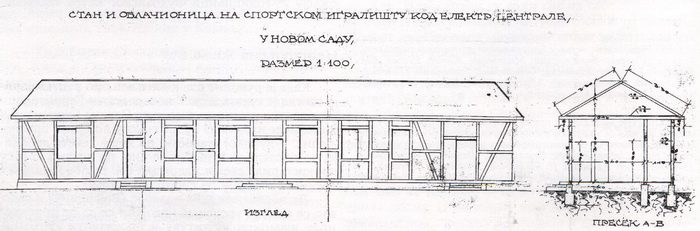
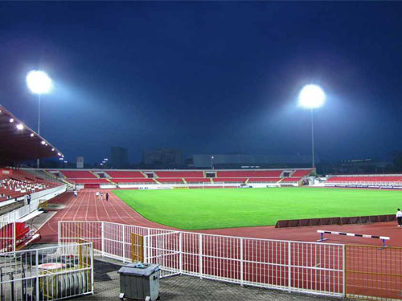
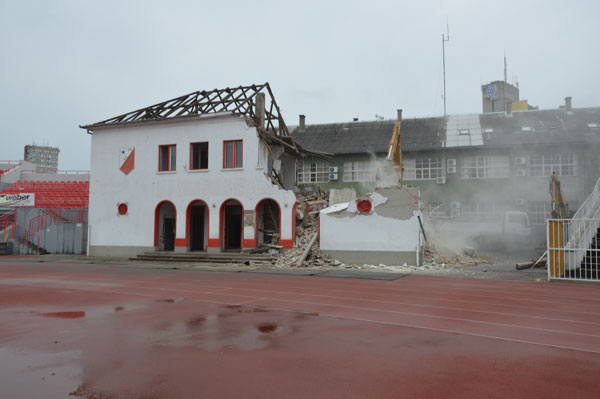
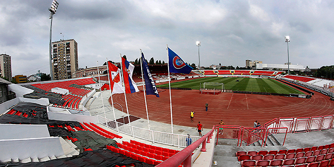

Stadion “Karađorđe”
Priča o stadionu “Karađorđe” počinje davne i daleke 1924.Tadašnji predsednik kluba, ugledni novosađanin, inženjer Daka Popović uradio je projekat stadiona koji su zajedničkim snagama izgradili Juda Makabi, klub koji je okupljao novosadsku jevrejsku omladinu i Vojvodina.
Zemljište na kome je građen stadion iznajmljeno je od tadašnjih gradskih vlasti, a finansijska sredstva koja su bila potrebna za materijal i radove prikupljana su kroz dobrovoljne priloge simpatizera i članova oba kluba kao i druge akcije kao što su bila gostovanja američkih kabaretskih trupa “Plava ptica” i “Luizijana”. Ipak najveći donator bio je sam Daka Popović koji je poklonio građevinski materijal u vrednosti 24000 dinara od koga su izgrađeni tribina i svlačionice.
Novoizgrađeni stadion kod tadašnje električne centrale, svečano je otvoren na Vidovdan 28. juna 1924. i dobio ime “Karađorđe”. 1931. pokrivena je tribina i proširen kapacitet, pa je mogla da primi 500 gledalaca, a celo igralište je ograđeno.Za vreme Drugog svetskog rata sagrađena je kuća na južnoj strani stadiona u kojoj se i danas nalaze svlačionice i prostorije za službena lica.Novčanim sredstvima koje je klub inkasirao od transfera Silvestera Takača, 1967. kupljeni su reflektori koji su prvi put obasjali travu “Karađorđa” na istorijskoj utakmici četvrtfinala Kupa šampiona protiv Seltika kada je i postignut rekord stadiona u broju gledalaca, 35000.Delimične rekonstrukcije ovog objekta rađene su u nekoliko prilika.
Izgradnja Severne tribine
Završetak izgradnje severne tribine 1991. potom 2004. izgradnja tartan atletske staze i napokon 2009. sagrađena je nova jugoistočna tribina sa najmodernijim semaforom koji je prvi put upotrebljen na Evropskom atletskom prvenstvu za juniore iste godine.Današnji kapacitet stadiona podrazumeva 14458 sedeća mesta, dok je generalnim urbanističkim planom predviđena trajna rekonstrukcija “Karađorđa” koja predviđa izgradnju nove istočne i kompletno pokrivanje gledališta sa oko 19500 sedišta.
Zahvaljujući pre svih inicijativi predsednika kluba, Ratka Butorovića, grad Novi Sad finansirao je nabavku novih reflektora marke “Phillips” jačine 1700 luksa, pa time naš stadion od leta 2011. ispunjava sve uslove koje propisuje UEFA za odigravanje utakmica u zvaničnim evropskim takmičenjima.
24. maja 2013. rušenjem legendarne kuće (podignuta 1942. god) počela je rekonstrukcija stadiona “Karađorđe” i izgradna potpuno nove južne tribine ispod koje su sagrađene prostorije koje obuhvataju svu kompletnu infrastrukturu po standardima UEFA : svlačionice, soba za doping kontrolu, pres sala, ambulanta za igrače i gledaoce, prostorija za sastanke i kancelarijski prostor.